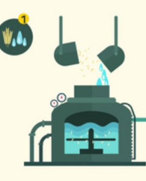
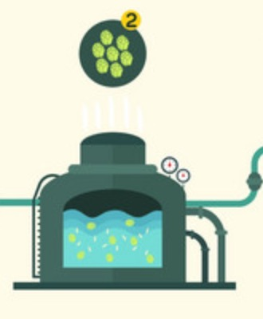
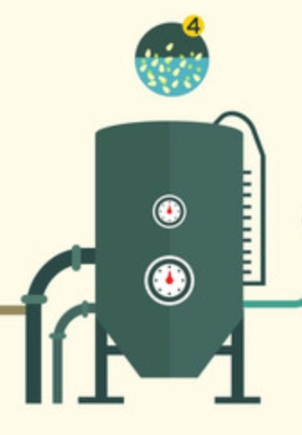
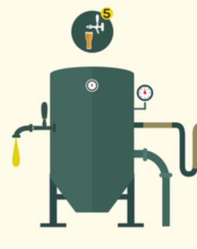
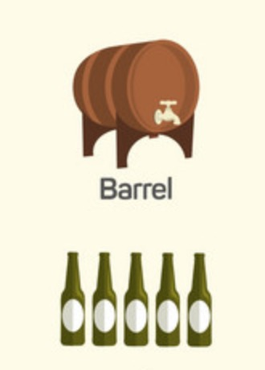

Warzenie piwa krok po kroku
Proces produkcji piwa u swoich podstaw jest prosty. To jakie osiągniemy efekty kryje się w szczegółach jego konkretnych etapów.
1

Zacieranie
Słód namacza się w ciepłej wodzie, aby przerobić jego skrobię na cukry
2

Wysładzanie
Proces filtracji w celu oddzielenia brzeczki od łuski oraz płukanie
3

Gotowanie
Gotowanie brzeczki z dodatkiem chmielu lub innych dodatków.
4

Fermentacja
Do schłodzonej brzeczki dodawane są drozdze i rozpoczyna się proces przetwarzania cukrów na alkohol.
5

Lezakowanie
Przetrzymywanie piwa w zbiorniku celem sklarowania i ułozenia. Aby było pyszne.
6

Gotowanie
Przelanie piwa do butelek
lub beczek.